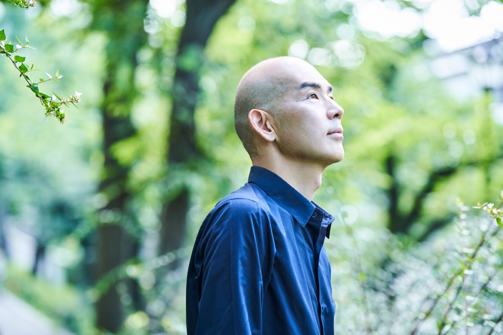
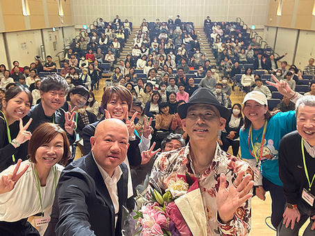
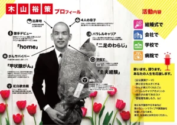

| 講師 | 木山裕策 氏（歌手・「home」・NHK紅白歌合戦出場） |
| 内容 | 講演（約60分）＋ミニライブ（約30分） |
| 日時候補 | 12月を予定 |
| 会場候補 | 川崎市アートセンター（新百合ヶ丘）を検討中 |
| 対象 | 区内PTA会員を優先しつつ、広く地域にも公開 |
| 想定参加人数 | 約200名（確保できた会場にもよります。） |
| 参加費 | 無料（徴収しません） |
| 支出見込額 | （講演料約27万円＋会場費約2万円＋チラシ作成・印刷費約7万円＋雑費約2万円） |
| 財源 | 既承認済みの成人教育費7万円（全額組み替え）＋本会の予備費からの繰入（必要経費分のみ）＋共催・協賛・寄付（集まった分だけ予備費の充当を軽減） |
| 会費への影響 | 会費の金額への影響はありません。仮に全額を本会の資金で賄っても、会員一人あたり約36円ですが、今年度予算でまかなえます。 |
木山さんの講演は、「いくつになっても夢を叶えられる」「失敗しても人生は終わらない」というメッセージを、ご自身の実体験と歌で伝えるものです。麻生区P協がめざす「保護者が学校・地域・子どものコミュニティを育て、ワクワクする学びの場を生み出す」（令和8年度事業活動計画）の実践です。
今年度から専門委員活動は委員長などを置かず、運営委員で一緒に企画・実施する新しい形になりました。その最初の年に、「どのような活動が子どもたちのためになるか」という問いから生まれたのがこの企画です。
「もう一度聞きたい」「自分もぜひ聞きたい」という声が麻生区でも寄せられています（詳しい内容は補足6参照）。

1. 「PTA会員以外も参加できる」形での告知を行う予定です。区Pとして主催する講演活動を、にしたいと考えています。地域に開くからこそ、地域の企業・団体にご協賛をお願いすることもしやすくなります。
2. 川崎市P協が開催した、本年5月の木山さんの講演会は一般に公開されました（市Pホームページの開催報告をご覧ください）。
3. 会員のみなさまには、優先してのご案内を検討します。
※講演会を12月開催の予定での日程です。開催日程の決定後に最終確定します。
歌手の木山裕策さんをお招きし、講演とミニライブの会を開きたい理由は3つあります。
木山さんの講演は、「いくつになっても夢を叶えられる」「失敗しても人生は終わらない」というメッセージを、ご自身の実体験と歌で伝えるものです（下の講師紹介をご覧ください）。
聞いた大人が前向きになる。その姿を見た子どもたちが、前向きな生き方を学ぶ。これは、麻生区PTA協議会がめざす「保護者が学校・地域・子どものコミュニティを育て、ワクワクする学びの場を生み出す」（令和8年度事業活動計画）の、いちばん分かりやすい実践だと考えています。成人教育事業の今年度の計画「関係諸団体・地域と連携した親子の学びの場、相互親睦の場を運営する」にも、そのまま重なります。保護者だけでなく、学校や地域の方とも学びを分かち合える場にします。
今年度から、専門委員会という体裁を変え、委員長・副委員長等を置かず、運営委員のみなさんと一緒に各事業活動を企画する新しい形になりました。その最初の年に、「どのような情報を保護者やPTA会員に届けることが、子どもたちの社会教育、さらに、おとなである保護者・教員の生きがいの向上につながるのだろう」という問いから、運営委員の皆さんの発想でこの企画が生まれました。
役員会は、この発想と行動をまず尊重し、みんなで形にしたいと考えています。新しい体制の最初の年に「自分たちの発想が実際に形になった」という経験を、一緒に作りたいと考えます。
川崎市PTA連絡協議会（市P）は本年5月22日、中原市民館で木山さんの教育講演会を開きました。開催報告には、参加された方の感想が紹介されています。
そして麻生区でも、参加した方からは「もう一度聞きたい」、参加できなかった方からは「自分もぜひ聞きたい」という声が寄せられています。この反響を、一度きりで終わらせず麻生区内の社会教育活動につなげたい、というのが本企画です。
1968年10月3日、大阪府生まれの歌手。4人の息子さんのお父さんです。
会社員だった2005年、甲状腺がんの手術を受けることになり、「声が出なくなるかもしれない」と告げられました。手術の前夜、挑戦してこなかった人生を悔やんで涙が止まらなかったそうです。手術のあと、「子どもたちに最後まであきらめない姿を見せたい」と、38歳でオーディション番組『歌スタ!!』に挑戦。一度は不合格になり、テレビの前の息子さんたちは号泣しました。それでも「子どもたちに見せるべきなのは、勝つ姿じゃない。負ける姿こそ見せるべきだ」という音楽プロデューサーの言葉に背中を押されて再挑戦し、2008年2月6日、家族への愛を歌った「home」で、メジャーデビューしました。
・「39歳でデビューした現役サラリーマンのミリオンダウンロードは前例がない」と報じられました（音楽ニュースBARKS・2009年）。日本ゴールドディスク大賞の新人賞も受賞。
・その後も、長男の成人式に向けた「旅立ち」（2016年）、両親への感謝を歌った「手紙」（2018年）など、家族をテーマにした曲を発表。2019年には朝日新聞社のがん啓発プロジェクト「ネクストリボン」のテーマ曲「幸せはここに」を担当し、2020年にキングレコードへ移籍しました。
・現在は歌手活動と講演活動が中心。ご自身の経験を活かした医療関係の講演にも力を入れ、学校の芸術鑑賞会や自治体・PTAの講演会に多数登壇しています。
・子育てでは「対話を大切にする」ことを新聞の子育て面などで発信しています。
（プロフィールは木山裕策オフィシャルページ https://yusakukiyama.com/biography/ 等をもとに作成）
講演で語られるのは、上のようなメッセージです。体験談約60分＋テーマに合わせた歌約30分の構成が基本で、市Pの講演会もこの「講演＋ミニライブ」の形で好評だったため、麻生区の企画もこちらで行いたいと考えます。

| 費目 | 金額 | 備考 |
|---|---|---|
| 講演料 | 約27万円 | 教育目的・PTA主催であることをお伝えしてご相談したところ、通常の講演料から値引きのご回答をいただいた実額です（23万円＋消費税＋交通費） |
| 会場費 | 約2万円 | アートセンター使用料約1.5万円＋附帯設備費見込み |
| チラシ作成・印刷費 | 約7万円 | 昨年度成人教育委員会実績5.3万円。デジタル配信を併用しますが、配布枚数が増えることからこの金額としています |
| 雑費 | 約2万円 | その他、備品購入・運営に関わる費用として |
| 本企画の概算支出金額として |
| 財源 | 考え方 |
|---|---|
| 成人教育費の既存予算 | 令和8年度予算・費目「成人教育費」7万円（講演会費・委員会費・チラシ作成費として計上）を、本企画の「講演会特別区分」の財源として組み替えます |
| 本会の予備費からの繰入 | 総会の承認を得たうえで、38万円の範囲内で必要経費分を、本講演会の運営費用として「講演会特別区分」へ組み入れます。予備費（約118.6万円）のうち必要な範囲のみを充て、仮に上限38万円を全額充当しても約80万円が残り、非常時への備えは維持されます |
| 共催負担金 | 単位PTA・関係団体に、費用の折半・一部負担を含む共催のご相談を試みます。他団体で共催費用が得られた場合は、本会の運営費用に組み入れ、予備費からの充当額を低減します |
| 協賛金・ご寄付 | 企業・個人・団体にご支援の依頼を試みます。金額の目標は設けませんが、協賛金・ご寄付が集まった分だけ、予備費からの充当額を低減します |
1. 支出は総額38万円程度を上限とし、総会での承認をいただきます。
2. ご支援（共催・協賛・ご寄付）の集まり具合により、本会の実負担額が変わります。集まらなくても、上限の範囲内で開催が可能と考えています。
3. 支出が上限を大きく超える見込みとなった場合は、内容・規模を見直します。
4. この講演会のお金は「講演会特別区分」として、一般会計内に新たな項目を設けて管理します。
5. 終了後に、収入と支出の全額をご報告します。
本会の負担を少しでも軽くするため、次の方々に協力の依頼を試みます。承認後に正式な依頼を行います。金額の目標は設けません。
| お相手 | お願いする内容 |
|---|---|
| 他区のPTA協議会（例: 多摩区PTA協議会） | 共催（費用の折半・一部負担を含む）のご相談 |
| 麻生区地域教育会議 | 共催（費用の折半・一部負担を含む）もしくは後援のご相談 |
| 企業・団体・個人 | 協賛金・ご寄付 |
| 川崎市PTA連絡協議会・川崎市教育委員会 | 後援名義の申請 |
以上